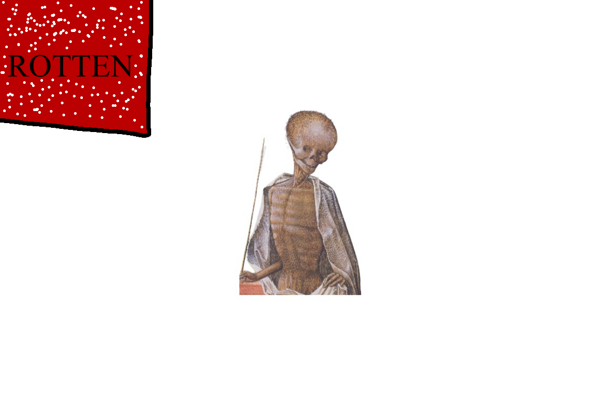

THE ROTTEN COMEBACK MOVEMENTWHAT WE'RE FORThis website is made to bring back rotten dot com culture. We are not the official rotten dot com, just a fan here. We don't have any shocking content and will not, rotten itself did that job. I view rotten dot com as a website that fought for freedom through shocking the viewer. I do not think of rotten dot com as just a shock site... I prefer the true purpose over what people made it out to be. SPREAD THIS SITESpread this site make custom posters or flags. THE OFFICIAL FLAGThis is the official flag of the movement. Print it, paste it, fly it, or drop it on your own pages to show your support.  |